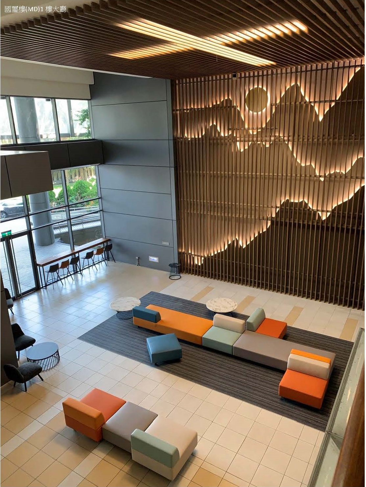
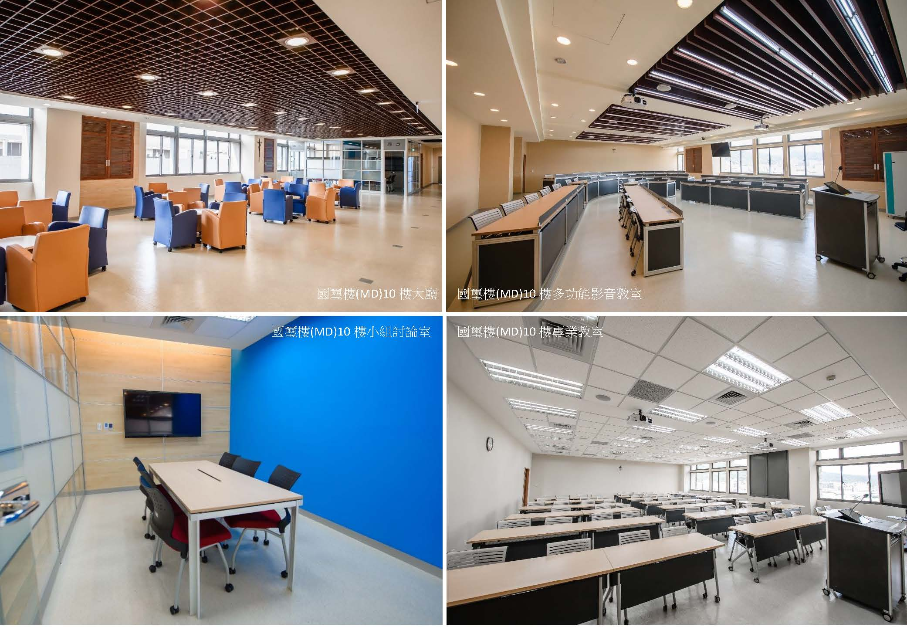
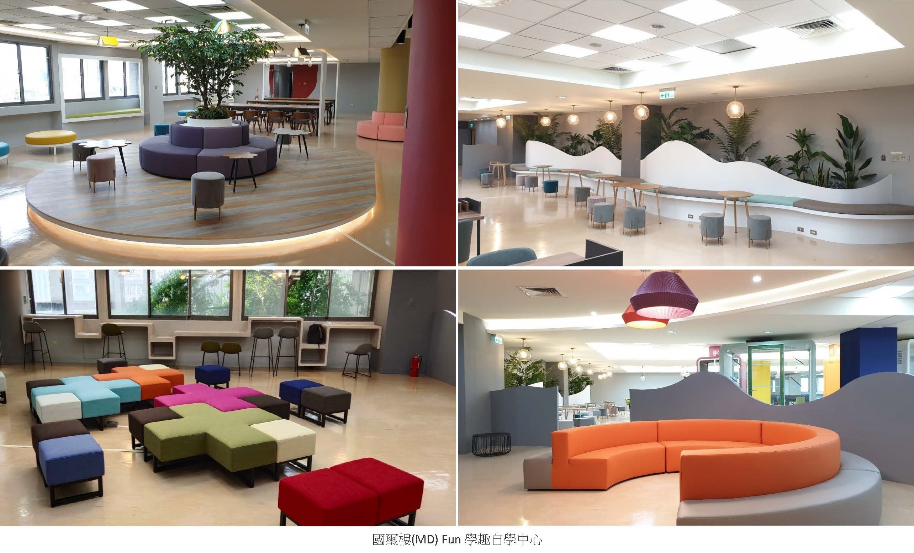

About · Our Learning Environment
關於 · 學習環境
Our Learning Environment
學習環境
Fu Jen Catholic University sits at a unique junction of two MRT lines. Travel across Greater Taipei is convenient, and the Airport MRT makes exploring the world even easier.
輔仁大學擁有得天獨厚的雙捷運線交會，大臺北地區交通四通八達，機場捷運線讓探索全世界更便利。
Walking into Cardinal Shan Building (MD), you first see a bright, spacious humanities lobby and the aroma of Yili Mai café, a place to recharge between classes and group discussion. Floors 10–12 house the College of Management’s professional classrooms: new equipment, comfortable lounge space, and the rooms where most imMBA teaching is scheduled.
走進國璽樓（MD），映入眼簾的是寬敞明亮的人文大廳，以及一粒麥陣陣的咖啡香，讓同學在充實課程和討論學習之餘，能隨時提振精神，獲得滿滿的能量。而位在國璽樓（MD）10–12 樓是管理學院的專業教室，設備新穎、休息空間舒適，國際經管（imMBA）學習空間也多安排在此。
Studying in Fu Jen imMBA means not only professional faculty and a diverse international peer group, but also a five-star learning environment at one of the highest points on campus, looking out over Fu Jen.
可以說在國際經管（imMBA）求學，除了專業的師資陣容、國際多元同儕共同學習之外，還能享有五星級的優質學習環境，雄踞校園制高點，俯瞰美麗的輔大校園。


Floors 3, 4 and 5 of the same building house a well-stocked library. After focused research, look out the window and think. Don’t miss the new e-learning “Fun Learning” self-study centre on floor 5, designed for independent study and creation.
國璽樓 3、4、5 樓是藏書豐富的圖書館，埋頭研究之餘，偶而遠眺窗外，靜心沉思。不容錯過位於 5 樓新落成的 e 化「Fun 學趣自學中心」，學習創作更有感。

Official learning environment page 官方學習環境頁 College of Management 輔大管理學院